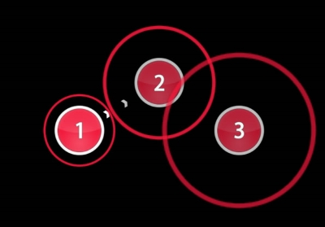
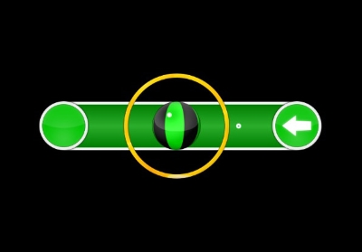
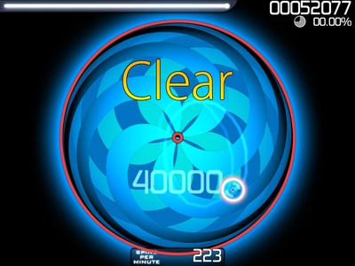
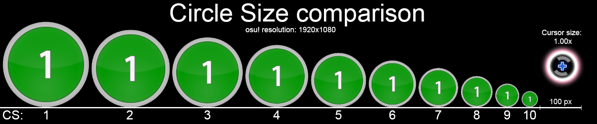

The main game mode,osu!standard, sometimes referred to as osu!std or just osu!, is the default game mode and consists of playing beatmaps by clicking circles, sliders, and spinners.
Other gameplay modifiers add additional gameplay features or change the difficulty (e.g. Double Time, Hidden, Flashlight, Hard Rock). Inspiration for this mode was taken from Osu! Tatakae! Ouendan and Elite Beat Agents.
Basics
Hit Circles

osu! hit circles
A thin, similarly-coloured approach circle on the outside of the hit circle will shrink over time.
Tap on the note at the exact point when it touches the white border of the hit circle.
A score burst will appear after tapping the hit circle, showing the score and health changes depending on timing of the tap to the beat.
The hit circle will disappear after the score burst.
To understand the hidden charm of hit circles, do not rely on perception only; feel the beatmap's beats and rhythm.
It will help in juggling some of the visually-complex hit circles patterns found in later difficulties.
Slider

osu! slider
First, tap on it at the right moment, like you would with a hit circle, then hold and follow the path of the slider.
Sometimes, as seen in the screenshot above, the ball may reverse its direction and the player must follow the ball back to the start of the path or vice versa.
The visual cue is a reverse arrow at the ending/starting circle of the path.
Spinner

osu! spinner
Spinner
Hold on the mouse/keyboard-button (or keep the pen onto the tablet).
From there, use the mouse (or pen) and spin the spinner in a circular motion (in either direction) until the spinner circle grows outwards completely.
A Clear notice will appear to indicate that the spinner was completed.
If the spinner was cleared early, continue spinning to collect score bonus and gain some health back.
If mouse/keyboard-button was released (or pen did not touch the tablet) early during the spin, the spinner will stop reading the spin.
Difficulty Settings
Approach Rate (AR)
The values range from 0 to 10; higher AR values will make the hit windows of hit objects shorter.
AR indicates how long hit objects will stay on the screen, from the moment they appear until the time to tap/collect.
Here are how fast the the approach circle closes per AR:
AR11 – 300ms (This is only attainable when playing AR10 with Double Time)
AR10 – 450ms
AR9 – 600ms
AR8 – 750ms
AR7 – 900ms
AR6 – 1050ms
AR5 – 1200ms
AR4 – 1320ms
AR3 – 1440ms
AR2 – 1560ms
AR1 – 1680ms
AR0 – 1800ms
Overall difficulty(OD)
This determines the timing window for 300s, 100s and 50s and also how easily you can get the spinner bonus.
The higher the OD is, the tighter the window for a perfect note is.
Circle Size (CS)
Like the name suggests, it determines the size of the circle.
The higher the circle size, the smaller the circle is.

Game Modifiers (Mods)
Hard Rock
Raises circle size by 30% and the rest of the difficulty settings by 40%. Hard Rock mod also flips the beatmap on the X axis, so that elements that were at the bottom of the map are now at the top and vice versa.
Score multiplier: 1.06x
Hidden
Eliminates the approach circles and causes the hit objects to fade out shortly after appearing, forcing players to more or less memorize the timing and, to a lesser degree, the placement and the slider path.
Score multiplier: 1.06x
Double Time
Increases the overall beatmap's speed (BPM) to 150% of the original, reducing the length of the song by 33%, and increases AR, OD, and HP by a small amount.
Score multiplier: 1.12x
Suddent Death/Perfect
Sudden Death mod causes the player to fail the map if the combo is ever broken, resulting in an extra large miss figure and a full HP drain.
Combo can be broken by missing a note, not clicking on a starting slider circle (osu!standard only), not collecting a slider tick, or failing to complete a spinner. However, combo will not be broken by missing a slider end (result in getting 100 score value instead for that slider completion; osu!standard only) or not holding/collecting on the empty slider path.
Click on Sudden Death twice to activate Perfect Mod
Perfect mod causes any imperfect hit (as in, any score values that does not give 100% accuracy) to be counted as a miss and will forcefully restart the song automatically, something Sudden Death does not do.
Score multiplier: none
Beatmaps
Beatmaps are game levels in osu!. In their most basic form, a beatmap have a song and various hit objects placed according to the rhythm of the music. They can also have a background image, video, and/or storyboard.
Beatmaps can be downloaded from the osu webpage in the Beatmap Listings.
Storyboard
A storyboard (SB) is a custom-made animated background that accompanies a beatmap, often for decorative and sometimes for gameplay purposes. A storyboard can be comprised of just about anything, but usually they consist of visual effects designed to make a map more aesthetically pleasing and distinctive to users. Many players tend to turn the storyboard off, since it can be distracting when playing the beatmap.
Playstyles
There are different ways to play osu!, and there isn't a better way than the other, just use what you are comfortable with.
Mouse & Keyboard
This is a common playstyle that newer players use, using the mouse to aim and tapping on their keyboard, with whichever keys they want (Z and X are the defaults).
Tablet & Keyboard
Aiming with a graphic tablet, and like mouse and keyboard, tapping on their keyboard. This playstyle is much very popular amongst the osu! community and some even consider it to be the most optimal way to play the game. This playstyle is widely used within higher ranked players, with very few players using mouse and keyboard in the top 100.
Skinning
Skinning is an essential part of playing osu!, the game lets you pick how you want your game to look, and you can even change the elements yourself, but it will require some time and effort.
Click here for more information about making your own skin.
There are many skins already made for people to play with, simply search one on the internet and choose one that seems the most comfortable for you! Here are some examples: